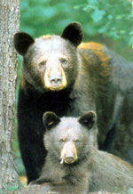
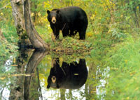

You moved out of the city to get away from disturbances and crime. Now instead of worrying about unruly teenagers and vandals, you have 300-pound prowlers in the form of black bears, Ursus americanus , who don't understand property lines.
With the following simple precautions from the American Bear Association, you can share space more safely with these magnificent creatures. After all, we are living on what was once their turf. Endemic to North America, the black bear once roamed through forests across the continent. Although growing human populations have severely reduced this traditional range, black bears still can be found in relatively undisturbed forested regions in 40 states and throughout Canada. In the Northeast and mid-Atlantic states, black bear populations are even slowly expanding, but they nevertheless face constantly encroaching development by humans. With less area to forage, bears are naturally going to look for food on the borders between their country and ours-the areas most attractive to homesteaders, too.
Black bears are naturally afraid of humans, though. If a bear shows up in your yard, it's probably responding to your unintentional invitation. With their keen sense of smell, bears can detect miniscule amounts of leftover food or garbage. Here are the ABA's tips for managing ursine visitors that may turn up in your yard:
Don't leave garbage cans outside. It may be trash to you, but it's a smorgasbord to bears. Instead, store your trash in a secure building, such as a garage, and keep smelly items wrapped in plastic in the freezer until pick-up day. If you must store trash outdoors, consider a "bear-proof' container (see "Bear-proof ..." below).
Bring your bird feeders in at night. Bears like berries, nuts, grasses, carrion, insects and birdseed. They also will go for the sugar water in hummingbird feeders. If you don't want to bring in feeders every night, hang them at least 10 feet off the ground on wire suspended between two trees. Also consider only feeding birds between December and April-the time frame when most bears are hibernating.
Protect your compost pile. Use only non-food items or use a small electric fence or a trench-composting technique.
Don't store pet food outside. If you're going to feed Fido alfresco, clean the bowl and pick up any scraps.
Take care of your outdoor grills and burn barrels. Leftover grease and food will attract bears. Don't dump grease or charred meat anywhere outside, as bears eventually will sniff it out. Store grills and bum barrels in secure areas whenever possible.
Be prepared to share your crops if you're not prompt at harvesting them. Vegetables and fruits should be picked as they ripen (for more reasons than just bears). If you are late, clear away any overripe fruits and vegetables.
Don't focus just on food. Bears like pretty much anything with a strong smell. They'll sniff, claw, sample or rub aromatic wood-such as cedar or pine-and petroleum products-such as tarpaper, paint, turpentine, kerosene and charcoal lighting fluid. It's best to store this stuff inside.
Watch your calendar. Bears couldn't care less about livestock for most of the year. But if food is scarce, they might take a chance during birthing season. If you are worried about bears, keep expectant female livestock and their young near protected enclosures. If you lose any animals during this time, properly dispose of the carcasses, preferably away from your stock. Use lime to reduce the odor.
Should a black bear wander through your yard, it will wander right back out if it is not rewarded with food. If it does find a treat, you've issued an open invitation for repeat visits. Feeding bears, whether intentionally or unintentionally, will teach them to associate food with people. This may compromise the safety of both humans and bears. Negative encounters with black bears usually are the result of bears reacting defensively rather than aggressively.
Black bears are a cornerstone species of North American wilderness and observing them can be a thrilling experience. By understanding their needs, you can peacefully cohabit with black bears to their benefit and yours.
Bear-proof Trash Containers
Bearable Trash Solutions
105 B Dorsa Ave.
Wayne, NJ 07470
(973) 694-7467
www.bearproofing.com
BearProofInc.
234 S. Golden Drive
Silt, CO 81652
(970)309-2460
www.bearproofinc.com
BearSaver
1390 S. Milliken Ave .
Ontario, CA 91761
(909) 605-1697
www.bearsaver.com
Solid Waste Systems
7855 E. Lark Drive
Parker, CO 80138
(800)944-7973
www.bearproofsystems.com
Remember these tips if you encounter a Black Bear
Don't panic. Do not approach a black bear. Do not run! Back away slowly, holding your arms above your head. Try to look as big as possible. If a bear lunges, snaps its jaws or slaps the ground, you are too close. Restrain children and dogs. Don't look the bear in the eyes. That's a threat in the animal kingdom. Don't assume the bear is attacking if it stands up. It may be trying to get a better look. If a black bear does attack, fight back. Vigorously punch and kick, especially at its nose and eyes. Get inside if you can. If the bear is treed, it is probably scared. Remove all threats and give it time to come down and get away. (It may wait until after dark.)
The American Bear Association has more information on black bears. Visit their Web site at www.americanbear.org , or write to them at PO. Box 77; Orr, MN 55771.
Mother Earth News
|
Western black bears often have brown, cinnamon and blonde color phases. |
 |
 |